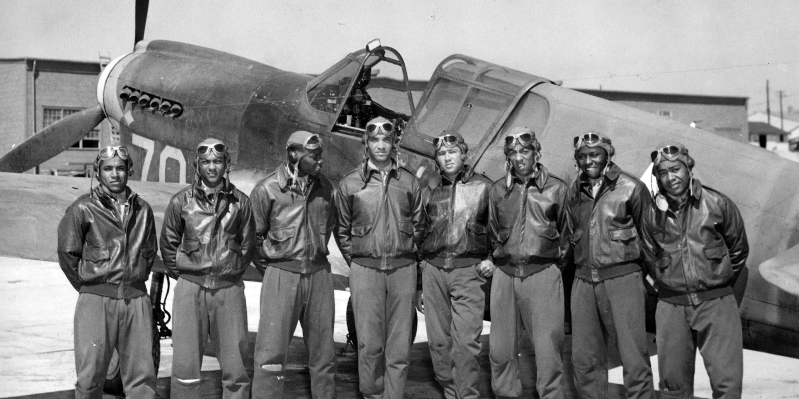

The Tuskegee Airmen: Training, Combat Service, and Legacy
During World War II, the Tuskegee Airmen—African American military aviators, navigators, bombardiers, maintenance crews, and support personnel—trained at Tuskegee Army Air Field in Alabama and served with distinction across the Mediterranean and European theaters.
Origins, Training at Tuskegee, and Overcoming Barriers

Before the United States entered World War II, civil rights leaders, Black newspapers, and community advocates pressed the federal government and military to open aviation and combat roles to African Americans. Despite skepticism and institutional resistance within parts of the War Department, congressional action and public pressure led to the creation of an experimental training program in 1941.
Tuskegee Army Air Field in Macon County, Alabama, became the center of this effort, paired with civilian flight instruction through Tuskegee Institute. Cadets underwent rigorous ground school, physical conditioning, navigation, gunnery, and flight training while living under the realities of Jim Crow segregation in the American South.
Success required far more than pilots alone. Mechanics, armorers, weather observers, radio operators, parachute riggers, and medical personnel kept aircraft flying and maintained high readiness standards across demanding training schedules.
Graduates who earned their wings advanced into operational units such as the 99th Pursuit Squadron—later the 99th Fighter Squadron—and the 332nd Fighter Group, preparing for overseas deployment as Allied air operations expanded.
Mediterranean Operations and Bomber Escort Missions

Deploying first to North Africa and then to Italy in 1943 and 1944, Tuskegee units flew patrol, ground-attack, interception, and escort missions across challenging terrain and shifting weather conditions.
In the Mediterranean theater, fighter pilots conducted close air support and strafing runs against rail lines, airfields, supply depots, and enemy positions supporting Allied ground advances up the Italian peninsula.
In 1944, the 332nd Fighter Group transitioned to long-range bomber escort duty with the Fifteenth Air Force, flying P-51 Mustangs painted with distinctive red tail markings that earned them the nickname 'Red Tails' among bomber crews.
Escorting heavy bombers on long missions into Central Europe and the Balkans demanded strict discipline, fuel management, and coordinated formation flying against interceptors and intense anti-aircraft defenses.
Postwar Impact and Enduring Historical Legacy

When the war ended in 1945, the pilots and support crews of the Tuskegee program had logged thousands of combat sorties, earned numerous decorations for valor and service, and demonstrated that African American personnel excelled in complex technical and combat roles.
Their wartime record—alongside the broader service of Black troops across the armed forces—contributed directly to postwar debates over civil rights and military policy, culminating in President Harry S. Truman's 1948 executive order desegregating the U.S. armed forces.
In later decades, congressional recognition, national historic sites, museums, and educational programs preserved the stories of the airmen and ground crews who challenged prejudice through skill, professionalism, and perseverance.